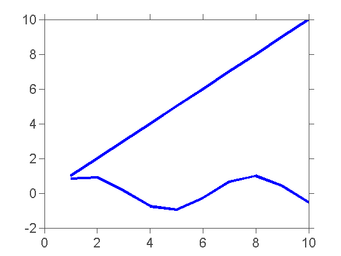
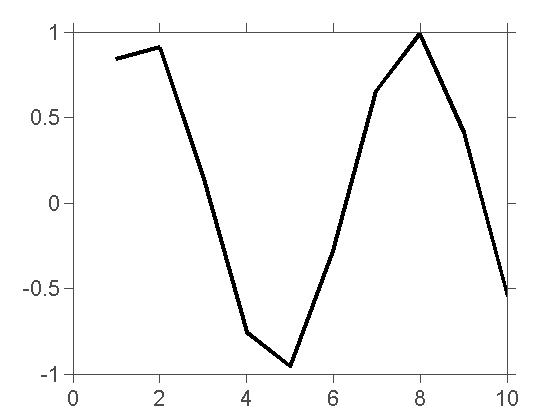
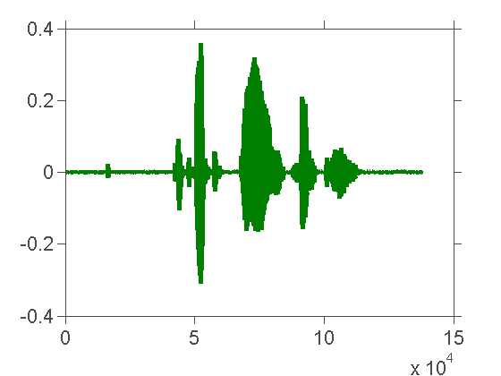

CELEST Matlab Tutorial
Contents
Comments, Variables, Vectors and Matrices
firingRate = 5
b = [3; 4]
size(b)
c = [3 4]
size(c)
c = [3 4];
d = [1 2; 3 4]
d = [1 2; ...
3 4]
size(d)
vec = 1:10
vec = 1:.25:10
vec(4)
vec(4) = 33
clc
clear all
help clc
help clear
clc
firingRate =
5
b =
3
4
ans =
2 1
c =
3 4
ans =
1 2
d =
1 2
3 4
d =
1 2
3 4
ans =
2 2
vec =
1 2 3 4 5 6 7 8 9 10
vec =
Columns 1 through 7
1.0000 1.2500 1.5000 1.7500 2.0000 2.2500 2.5000
Columns 8 through 14
2.7500 3.0000 3.2500 3.5000 3.7500 4.0000 4.2500
Columns 15 through 21
4.5000 4.7500 5.0000 5.2500 5.5000 5.7500 6.0000
Columns 22 through 28
6.2500 6.5000 6.7500 7.0000 7.2500 7.5000 7.7500
Columns 29 through 35
8.0000 8.2500 8.5000 8.7500 9.0000 9.2500 9.5000
Columns 36 through 37
9.7500 10.0000
ans =
1.7500
vec =
Columns 1 through 7
1.0000 1.2500 1.5000 33.0000 2.0000 2.2500 2.5000
Columns 8 through 14
2.7500 3.0000 3.2500 3.5000 3.7500 4.0000 4.2500
Columns 15 through 21
4.5000 4.7500 5.0000 5.2500 5.5000 5.7500 6.0000
Columns 22 through 28
6.2500 6.5000 6.7500 7.0000 7.2500 7.5000 7.7500
Columns 29 through 35
8.0000 8.2500 8.5000 8.7500 9.0000 9.2500 9.5000
Columns 36 through 37
9.7500 10.0000
CLC Clear command window.
CLC clears the command window and homes the cursor.
See also HOME.
Reference page in Help browser
doc clc
CLEAR Clear variables and functions from memory.
CLEAR removes all variables from the workspace.
CLEAR VARIABLES does the same thing.
CLEAR GLOBAL removes all global variables.
CLEAR FUNCTIONS removes all compiled MATLAB and MEX-functions.
CLEAR ALL removes all variables, globals, functions and MEX links.
CLEAR ALL at the command prompt also clears the base import list.
CLEAR IMPORT clears the base import list. It can only be issued at the
command prompt. It cannot be used in a function.
CLEAR CLASSES is the same as CLEAR ALL except that class definitions
are also cleared. If any objects exist outside the workspace (say in
userdata or persistent in a locked program file) a warning will be
issued and the class definition will not be cleared. CLEAR CLASSES must
be used if the number or names of fields in a class are changed.
CLEAR JAVA is the same as CLEAR ALL except that java classes on the
dynamic java path (defined using JAVACLASSPATH) are also cleared.
CLEAR VAR1 VAR2 ... clears the variables specified. The wildcard
character '*' can be used to clear variables that match a pattern. For
instance, CLEAR X* clears all the variables in the current workspace
that start with X.
CLEAR -REGEXP PAT1 PAT2 can be used to match all patterns using regular
expressions. This option only clears variables. For more information on
using regular expressions, type "doc regexp" at the command prompt.
If X is global, CLEAR X removes X from the current workspace, but
leaves it accessible to any functions declaring it global.
CLEAR GLOBAL X completely removes the global variable X.
CLEAR GLOBAL -REGEXP PAT removes global variables that match regular
expression patterns.
Note that to clear specific global variables, the GLOBAL option must
come first. Otherwise, all global variables will be cleared.
CLEAR FUN clears the function specified. If FUN has been locked by
MLOCK it will remain in memory. Use a partial path (see PARTIALPATH) to
distinguish between different overloaded versions of FUN. For
instance, 'clear inline/display' clears only the INLINE method for
DISPLAY, leaving any other implementations in memory.
CLEAR ALL, CLEAR FUN, or CLEAR FUNCTIONS also have the side effect of
removing debugging breakpoints and reinitializing persistent variables
since the breakpoints for a function and persistent variables are
cleared whenever the program file changes or is cleared.
Use the functional form of CLEAR, such as CLEAR('name'), when the
variable name or function name is stored in a string.
Examples for pattern matching:
clear a* % Clear variables starting with "a"
clear -regexp ^b\d{3}$ % Clear variables starting with "b" and
% followed by 3 digits
clear -regexp \d % Clear variables containing any digits
See also CLEARVARS, WHO, WHOS, MLOCK, MUNLOCK, PERSISTENT, IMPORT.
Reference page in Help browser
doc clear
Mathematical Operations
3 * 4
3 + 4
3 / 4
3 ^ 4
vector = [2 2]
vector .* 5
matrix = [2 2; 2 2]
matrix .* 3
matrix * matrix
[3 1; 9 2; 3 7] * [1; 2]
ans =
12
ans =
7
ans =
0.7500
ans =
81
vector =
2 2
ans =
10 10
matrix =
2 2
2 2
ans =
6 6
6 6
ans =
8 8
8 8
ans =
5
13
17
Logical operations
neuronFiringRate1 = 4
neuronFiringRate2 = 3
neuronFiringRate1 == neuronFiringRate2
neuronFiringRate1 > neuronFiringRate2
matrix
6 > matrix
isBig = 1;
isFast = 0;
isBig & isFast
isBig | isFast
~isBig | ~isFast
isBig ~= isFast
neuronFiringRate1 =
4
neuronFiringRate2 =
3
ans =
0
ans =
1
matrix =
2 2
2 2
ans =
1 1
1 1
ans =
0
ans =
1
ans =
1
ans =
1
Selective Indexing
vec = 1:10
vec(1)
vec(2)
vec(3)
vec > 5
vec(vec > 5)
vec(vec > 5) = 0
vec(vec == 5)
vec(vec ~= 5)
help ismember
help intersect
help find
help setdiff
help unique
vec =
1 2 3 4 5 6 7 8 9 10
ans =
1
ans =
2
ans =
3
ans =
0 0 0 0 0 1 1 1 1 1
ans =
6 7 8 9 10
vec =
1 2 3 4 5 0 0 0 0 0
ans =
5
ans =
1 2 3 4 0 0 0 0 0
ISMEMBER True for set member.
LIA = ISMEMBER(A,B) for arrays A and B returns an array of the same
size as A containing true where the elements of A are in B and false
otherwise.
LIA = ISMEMBER(A,B,'rows') for matrices A and B with the same number
of columns, returns a vector containing true where the rows of A are
also rows of B and false otherwise.
[LIA,LOCB] = ISMEMBER(A,B) also returns an array LOCB containing the
highest absolute index in B for each element in A which is a member of
B and 0 if there is no such index.
[LIA,LOCB] = ISMEMBER(A,B,'rows') also returns a vector LOCB containing
the highest absolute index in B for each row in A which is a member
of B and 0 if there is no such index.
In a future release, the behavior of ISMEMBER will change including:
- occurrence of indices in LOCB will switch from highest to lowest
- tighter restrictions on combinations of classes
In order to see what impact those changes will have on your code, use:
[LIA,LOCB] = ISMEMBER(A,B,'R2012a')
[LIA,LOCB] = ISMEMBER(A,B,'rows','R2012a')
If the changes in behavior adversely affect your code, you may preserve
the current behavior with:
[LIA,LOCB] = ISMEMBER(A,B,'legacy')
[LIA,LOCB] = ISMEMBER(A,B,'rows','legacy')
Examples:
a = [9 9 8 8 7 7 7 6 6 6 5 5 4 4 2 1 1 1]
b = [1 1 1 3 3 3 3 3 4 4 4 4 4 9 9 9]
[lia1,locb1] = ismember(a,b)
% returns
lia1 = [1 1 0 0 0 0 0 0 0 0 0 0 1 1 0 1 1 1]
locb1 = [16 16 0 0 0 0 0 0 0 0 0 0 13 13 0 3 3 3]
[lia2,locb2] = ismember(a,b,'R2012a')
% returns
lia2 = [1 1 0 0 0 0 0 0 0 0 0 0 1 1 0 1 1 1]
locb2 = [14 14 0 0 0 0 0 0 0 0 0 0 9 9 0 1 1 1]
[lia,locb] = ismember([1 NaN 2 3],[3 4 NaN 1])
% NaNs compare as not equal, so this returns
lia = [1 0 0 1], locb = [4 0 0 1]
Class support for inputs A and B, where A and B must be of the same
class unless stated otherwise:
- logical, char, all numeric classes (may combine with double arrays)
- cell arrays of strings (may combine with char arrays)
-- 'rows' option is not supported for cell arrays
- objects with methods SORT (SORTROWS for the 'rows' option), EQ and NE
-- including heterogeneous arrays derived from the same root class
See also UNIQUE, UNION, INTERSECT, SETDIFF, SETXOR, SORT, SORTROWS.
Overloaded methods:
cell/ismember
ordinal/ismember
nominal/ismember
categorical/ismember
Reference page in Help browser
doc ismember
INTERSECT Set intersection.
C = INTERSECT(A,B) for vectors A and B, returns the values common to
the two vectors with no repetitions. C will be sorted.
C = INTERSECT(A,B,'rows') for matrices A and B with the same
number of columns, returns the rows common to the two matrices. The
rows of the matrix C will be in sorted order.
[C,IA,IB] = INTERSECT(A,B) also returns index vectors IA and IB such
that C = A(IA) and C = B(IB). If there are repeated common values in
A or B then the index of the last occurrence of each repeated value is
returned.
[C,IA,IB] = INTERSECT(A,B,'rows') also returns index vectors IA and IB
such that C = A(IA,:) and C = B(IB,:).
[C,IA,IB] = INTERSECT(A,B,'stable') for arrays A and B, returns the
values of C in the same order that they appear in A.
[C,IA,IB] = INTERSECT(A,B,'sorted') returns the values of C in sorted
order.
If A and B are row vectors, then C will be a row vector as well,
otherwise C will be a column vector. IA and IB are column vectors.
If there are repeated common values in A or B then the index of the
first occurrence of each repeated value is returned.
[C,IA,IB] = INTERSECT(A,B,'rows','stable') returns the rows of C in the
same order that they appear in A.
[C,IA,IB] = INTERSECT(A,B,'rows','sorted') returns the rows of C in
sorted order.
In a future release, the behavior of the following syntaxes will change
including:
- occurrence of indices in IA and IB will switch from last to first
- orientation of vector C
- IA and IB will always be column index vectors
- tighter restrictions on combinations of classes
In order to see what impact those changes will have on your code, use:
[C,IA,IB] = INTERSECT(A,B,'R2012a')
[C,IA,IB] = INTERSECT(A,B,'rows','R2012a')
If the changes in behavior adversely affect your code, you may preserve
the current behavior with:
[C,IA,IB] = INTERSECT(A,B,'legacy')
[C,IA,IB] = INTERSECT(A,B,'rows','legacy')
Examples:
a = [9 9 9 9 9 9 8 8 8 8 7 7 7 6 6 6 5 5 4 2 1]
b = [1 1 1 3 3 3 3 3 4 4 4 4 4 10 10 10]
[c1,ia1,ib1] = intersect(a,b)
% returns
c1 = [1 4], ia1 = [21 19], ib1 = [3 13]
[c2,ia2,ib2] = intersect(a,b,'stable')
% returns
c2 = [4 1], ia2 = [19 21]', ib2 = [9 1]'
c = intersect([1 NaN 2 3],[3 4 NaN 1])
% NaNs compare as not equal, so this returns
c = [1 3]
Class support for inputs A and B, where A and B must be of the same
class unless stated otherwise:
- logical, char, all numeric classes (may combine with double arrays)
- cell arrays of strings (may combine with char arrays)
-- 'rows' option is not supported for cell arrays
- objects with methods SORT (SORTROWS for the 'rows' option), EQ and NE
-- including heterogeneous arrays derived from the same root class
See also UNIQUE, UNION, SETDIFF, SETXOR, ISMEMBER, SORT, SORTROWS.
Overloaded methods:
cell/intersect
ordinal/intersect
nominal/intersect
categorical/intersect
Reference page in Help browser
doc intersect
FIND Find indices of nonzero elements.
I = FIND(X) returns the linear indices corresponding to
the nonzero entries of the array X. X may be a logical expression.
Use IND2SUB(SIZE(X),I) to calculate multiple subscripts from
the linear indices I.
I = FIND(X,K) returns at most the first K indices corresponding to
the nonzero entries of the array X. K must be a positive integer,
but can be of any numeric type.
I = FIND(X,K,'first') is the same as I = FIND(X,K).
I = FIND(X,K,'last') returns at most the last K indices corresponding
to the nonzero entries of the array X.
[I,J] = FIND(X,...) returns the row and column indices instead of
linear indices into X. This syntax is especially useful when working
with sparse matrices. If X is an N-dimensional array where N > 2, then
J is a linear index over the N-1 trailing dimensions of X.
[I,J,V] = FIND(X,...) also returns a vector V containing the values
that correspond to the row and column indices I and J.
Example:
A = magic(3)
find(A > 5)
finds the linear indices of the 4 entries of the matrix A that are
greater than 5.
[rows,cols,vals] = find(speye(5))
finds the row and column indices and nonzero values of the 5-by-5
sparse identity matrix.
See also SPARSE, IND2SUB, RELOP, NONZEROS.
Overloaded methods:
codistributed/find
Reference page in Help browser
doc find
SETDIFF Set difference.
C = SETDIFF(A,B) for vectors A and B, returns the values in A that
are not in B with no repetitions. C will be sorted.
C = SETDIFF(A,B,'rows') for matrices A and B with the same number of
columns, returns the rows from A that are not in B. The rows of the
matrix C will be in sorted order.
[C,IA] = SETDIFF(A,B) also returns an index vector IA such that
C = A(IA). If there are repeated values in A that are not in B, then
the index of the last occurrence of each repeated value is returned.
[C,IA] = SETDIFF(A,B,'rows') also returns an index vector IA such that
C = A(IA,:).
[C,IA] = SETDIFF(A,B,'stable') for arrays A and B, returns the values
of C in the order that they appear in A.
[C,IA] = SETDIFF(A,B,'sorted') returns the values of C in sorted order.
If A is a row vector, then C will be a row vector as well, otherwise C
will be a column vector. IA is a column vector. If there are repeated
values in A that are not in B, then the index of the first occurrence of
each repeated value is returned.
[C,IA] = SETDIFF(A,B,'rows','stable') returns the rows of C in the
same order that they appear in A.
[C,IA] = SETDIFF(A,B,'rows','sorted') returns the rows of C in sorted
order.
In a future release, the behavior of the following syntaxes will change
including:
- occurrence of indices in IA will switch from last to first
- orientation of vector C
- IA will always be a column index vector
- tighter restrictions on combinations of classes
In order to see what impact those changes will have on your code, use:
[C,IA] = SETDIFF(A,B,'R2012a')
[C,IA] = SETDIFF(A,B,'rows','R2012a')
If the changes in behavior adversely affect your code, you may preserve
the current behavior with:
[C,IA] = SETDIFF(A,B,'legacy')
[C,IA] = SETDIFF(A,B,'rows','legacy')
Examples:
a = [9 9 9 9 9 9 8 8 8 8 7 7 7 6 6 6 5 5 4 2 1]
b = [1 1 1 3 3 3 3 3 4 4 4 4 4 10 10 10]
[c1,ia1] = setdiff(a,b)
% returns
c1 = [2 5 6 7 8 9]
ia1 = [20 18 16 13 10 6]
[c2,ia2] = setdiff(a,b,'stable')
% returns
c2 = [9 8 7 6 5 2]
ia2 = [1 7 11 14 17 20]'
c = setdiff([1 NaN 2 3],[3 4 NaN 1])
% NaNs compare as not equal, so this returns
c = [2 NaN]
Class support for inputs A and B, where A and B must be of the same
class unless stated otherwise:
- logical, char, all numeric classes (may combine with double arrays)
- cell arrays of strings (may combine with char arrays)
-- 'rows' option is not supported for cell arrays
- objects with methods SORT (SORTROWS for the 'rows' option), EQ and NE
-- including heterogeneous arrays derived from the same root class
See also UNIQUE, UNION, INTERSECT, SETXOR, ISMEMBER, SORT, SORTROWS.
Overloaded methods:
cell/setdiff
ordinal/setdiff
nominal/setdiff
categorical/setdiff
Reference page in Help browser
doc setdiff
UNIQUE Set unique.
C = UNIQUE(A) for the array A returns the same values as in A but with
no repetitions. C will be sorted.
C = UNIQUE(A,'rows') for the matrix A returns the unique rows of A.
The rows of the matrix C will be in sorted order.
[C,IA,IC] = UNIQUE(A) also returns index vectors IA and IC such that
C = A(IA) and A = C(IC).
[C,IA,IC] = UNIQUE(A,'rows') also returns index vectors IA and IC such
that C = A(IA,:) and A = C(IC,:).
[C,IA,IC] = UNIQUE(A,OCCURRENCE) and
[C,IA,IC] = UNIQUE(A,'rows',OCCURRENCE) specify which index is returned
in IA in the case of repeated values (or rows) in A. The default value
is OCCURENCE='last', which returns the index of the last occurrence of
each repeated value (or row) in A, while OCCURRENCE='first' returns the
index of the first occurrence of each repeated value (or row) in A.
[C,IA,IC] = UNIQUE(A,'stable') returns the values of C in the same order
that they appear in A, while [C,IA,IC] = UNIQUE(A,'sorted') returns the
values of C in sorted order. If A is a row vector, then C will be a row
vector as well, otherwise C will be a column vector. IA and IC are
column vectors. If there are repeated values in A, then IA returns the
index of the first occurrence of each repeated value.
[C,IA,IC] = UNIQUE(A,'rows','stable') returns the rows of C in the same
order that they appear in A, while [C,IA,IC] = UNIQUE(A,'rows','sorted')
returns the rows of C in sorted order.
In a future release, the behavior of the following syntaxes will change
including:
- Default occurrence of indices will switch from last to first
- IA and IC will always be column index vectors
In order to see what impact those changes will have on your code, use:
[C,IA,IC] = UNIQUE(A,'R2012a')
[C,IA,IC] = UNIQUE(A,'rows','R2012a')
[C,IA,IC] = UNIQUE(A,OCCURRENCE,'R2012a')
[C,IA,IC] = UNIQUE(A,'rows',OCCURRENCE,'R2012a')
If the changes in behavior adversely affect your code, you may preserve
the current behavior with:
[C,IA,IC] = UNIQUE(A,'legacy')
[C,IA,IC] = UNIQUE(A,'rows','legacy')
[C,IA,IC] = UNIQUE(A,OCCURRENCE,'legacy')
[C,IA,IC] = UNIQUE(A,'rows',OCCURRENCE,'legacy')
Examples:
a = [9 9 9 9 9 9 8 8 8 8 7 7 7 6 6 6 5 5 4 2 1]
[c1,ia1,ic1] = unique(a)
% returns
c1 = [1 2 4 5 6 7 8 9]
ia1 = [21 20 19 18 16 13 10 6]
ic1 = [8 8 8 8 8 8 7 7 7 7 6 6 6 5 5 5 4 4 3 2 1]
[c2,ia2,ic2] = unique(a,'stable')
% returns
c2 = [9 8 7 6 5 4 2 1]
ia2 = [1 7 11 14 17 19 20 21]'
ic2 = [1 1 1 1 1 1 2 2 2 2 3 3 3 4 4 4 5 5 6 7 8]'
c = unique([1 NaN NaN 2])
% NaNs compare as not equal, so this returns
c = [1 2 NaN NaN]
Class support for input A:
- logical, char, all numeric classes
- cell arrays of strings
-- 'rows' option is not supported for cell arrays
- objects with methods SORT (SORTROWS for the 'rows' option) and NE
-- including heterogeneous arrays
See also UNION, INTERSECT, SETDIFF, SETXOR, ISMEMBER, SORT, SORTROWS.
Overloaded methods:
cell/unique
RTW.unique
dataset/unique
categorical/unique
Reference page in Help browser
doc unique
Control Loops - For and If
for ind = 1:20
ex(ind) = ind
end
ex = 1:20;
isBig = 1;
if isBig
display('I will crush you')
else
display('Please do not hurt me');
end
isBig = 0;
if isBig
display('I will crush you')
else
display('Please do not hurt me');
end
ex =
1
ex =
1 2
ex =
1 2 3
ex =
1 2 3 4
ex =
1 2 3 4 5
ex =
1 2 3 4 5 6
ex =
1 2 3 4 5 6 7
ex =
1 2 3 4 5 6 7 8
ex =
1 2 3 4 5 6 7 8 9
ex =
1 2 3 4 5 6 7 8 9 10
ex =
1 2 3 4 5 6 7 8 9 10 11
ex =
1 2 3 4 5 6 7 8 9 10 11 12
ex =
1 2 3 4 5 6 7 8 9 10 11 12 13
ex =
Columns 1 through 13
1 2 3 4 5 6 7 8 9 10 11 12 13
Column 14
14
ex =
Columns 1 through 13
1 2 3 4 5 6 7 8 9 10 11 12 13
Columns 14 through 15
14 15
ex =
Columns 1 through 13
1 2 3 4 5 6 7 8 9 10 11 12 13
Columns 14 through 16
14 15 16
ex =
Columns 1 through 13
1 2 3 4 5 6 7 8 9 10 11 12 13
Columns 14 through 17
14 15 16 17
ex =
Columns 1 through 13
1 2 3 4 5 6 7 8 9 10 11 12 13
Columns 14 through 18
14 15 16 17 18
ex =
Columns 1 through 13
1 2 3 4 5 6 7 8 9 10 11 12 13
Columns 14 through 19
14 15 16 17 18 19
ex =
Columns 1 through 13
1 2 3 4 5 6 7 8 9 10 11 12 13
Columns 14 through 20
14 15 16 17 18 19 20
I will crush you
Please do not hurt me
Graphics
figure;
x = 1:10;
y = 1:10;
plot(x, y)
hold on
plot(x, sin(x))
hold all;
figure;
plot(x, sin(x), 'k');
figure;
plot(x, cos(x), 'r');
help bar
help hist
help stem
help surfc
BAR Bar graph.
BAR(X,Y) draws the columns of the M-by-N matrix Y as M groups of N
vertical bars. The vector X must not have duplicate values.
BAR(Y) uses the default value of X=1:M. For vector inputs, BAR(X,Y)
or BAR(Y) draws LENGTH(Y) bars. The colors are set by the colormap.
BAR(X,Y,WIDTH) or BAR(Y,WIDTH) specifies the width of the bars. Values
of WIDTH > 1, produce overlapped bars. The default value is WIDTH=0.8
BAR(...,'grouped') produces the default vertical grouped bar chart.
BAR(...,'stacked') produces a vertical stacked bar chart.
BAR(...,LINESPEC) uses the line color specified (one of 'rgbymckw').
BAR(AX,...) plots into AX instead of GCA.
H = BAR(...) returns a vector of handles to barseries objects.
Use SHADING FACETED to put edges on the bars. Use SHADING FLAT to
turn them off.
Examples: subplot(3,1,1), bar(rand(10,5),'stacked'), colormap(cool)
subplot(3,1,2), bar(0:.25:1,rand(5),1)
subplot(3,1,3), bar(rand(2,3),.75,'grouped')
See also HIST, PLOT, BARH, BAR3, BAR3H.
Overloaded methods:
fints/bar
Reference page in Help browser
doc bar
HIST Histogram.
N = HIST(Y) bins the elements of Y into 10 equally spaced containers
and returns the number of elements in each container. If Y is a
matrix, HIST works down the columns.
N = HIST(Y,M), where M is a scalar, uses M bins.
N = HIST(Y,X), where X is a vector, returns the distribution of Y
among bins with centers specified by X. The first bin includes
data between -inf and the first center and the last bin
includes data between the last bin and inf. Note: Use HISTC if
it is more natural to specify bin edges instead.
[N,X] = HIST(...) also returns the position of the bin centers in X.
HIST(...) without output arguments produces a histogram bar plot of
the results. The bar edges on the first and last bins may extend to
cover the min and max of the data unless a matrix of data is supplied.
HIST(AX,...) plots into AX instead of GCA.
Class support for inputs Y, X:
float: double, single
See also HISTC, MODE.
Overloaded methods:
fints/hist
categorical/hist
Reference page in Help browser
doc hist
STEM Discrete sequence or "stem" plot.
STEM(Y) plots the data sequence Y as stems from the x axis
terminated with circles for the data value. If Y is a matrix then
each column is plotted as a separate series.
STEM(X,Y) plots the data sequence Y at the values specified
in X.
STEM(...,'filled') produces a stem plot with filled markers.
STEM(...,'LINESPEC') uses the linetype specified for the stems and
markers. See PLOT for possibilities.
STEM(AX,...) plots into axes with handle AX. Use GCA to get the
handle to the current axes or to create one if none exist.
H = STEM(...) returns a vector of stemseries handles in H, one handle
per column of data in Y.
See also PLOT, BAR, STAIRS.
Reference page in Help browser
doc stem
SURFC Combination surf/contour plot.
SURFC(...) is the same as SURF(...) except that a contour plot
is drawn beneath the surface.
See also SURF, SHADING.
Reference page in Help browser
doc surfc
 

Functions vs Scripts
input1 = 5;
input2 = 10;
output = myFirstFunction(input1, input2)
[row, col] = size(matrix);
size(matrix)
row
col
output =
50
ans =
2 2
row =
2
col =
2
Saving and Loading Data
save('myFile.mat')
save('myFile.mat', 'output');
clear all; clc; close all;
load('myFile.mat')
Loading Audio Files
[fox, fs] = wavread('quickBrownFox.wav');
sound(fox, fs);
figure;
plot(fox);
sound(fox, 50000);

Loading Image Files
mj = imread('gotMJ.gif');
imshow(mj(:, :, :, 1));
implay(mj);
Other Useful Built-in Matlab Functions and Miscellany
help max
help min
help repmat
help ones
help zeros
help nan
help mean
help sort
help errorbar
help nanmean
help ode45
MAX Largest component.
For vectors, MAX(X) is the largest element in X. For matrices,
MAX(X) is a row vector containing the maximum element from each
column. For N-D arrays, MAX(X) operates along the first
non-singleton dimension.
[Y,I] = MAX(X) returns the indices of the maximum values in vector I.
If the values along the first non-singleton dimension contain more
than one maximal element, the index of the first one is returned.
MAX(X,Y) returns an array the same size as X and Y with the
largest elements taken from X or Y. Either one can be a scalar.
[Y,I] = MAX(X,[],DIM) operates along the dimension DIM.
When X is complex, the maximum is computed using the magnitude
MAX(ABS(X)). In the case of equal magnitude elements, then the phase
angle MAX(ANGLE(X)) is used.
NaN's are ignored when computing the maximum. When all elements in X
are NaN's, then the first one is returned as the maximum.
Example: If X = [2 8 4 then max(X,[],1) is [7 8 9],
7 3 9]
max(X,[],2) is [8 and max(X,5) is [5 8 5
9], 7 5 9].
See also MIN, MEDIAN, MEAN, SORT.
Overloaded methods:
codistributed/max
fints/max
ordinal/max
timeseries/max
Reference page in Help browser
doc max
MIN Smallest component.
For vectors, MIN(X) is the smallest element in X. For matrices,
MIN(X) is a row vector containing the minimum element from each
column. For N-D arrays, MIN(X) operates along the first
non-singleton dimension.
[Y,I] = MIN(X) returns the indices of the minimum values in vector I.
If the values along the first non-singleton dimension contain more
than one minimal element, the index of the first one is returned.
MIN(X,Y) returns an array the same size as X and Y with the
smallest elements taken from X or Y. Either one can be a scalar.
[Y,I] = MIN(X,[],DIM) operates along the dimension DIM.
When X is complex, the minimum is computed using the magnitude
MIN(ABS(X)). In the case of equal magnitude elements, then the phase
angle MIN(ANGLE(X)) is used.
NaN's are ignored when computing the minimum. When all elements in X
are NaN's, then the first one is returned as the minimum.
Example: If X = [2 8 4 then min(X,[],1) is [2 3 4],
7 3 9]
min(X,[],2) is [2 and min(X,5) is [2 5 4
3], 5 3 5].
See also MAX, MEDIAN, MEAN, SORT.
Overloaded methods:
codistributed/min
fints/min
ordinal/min
timeseries/min
Reference page in Help browser
doc min
REPMAT Replicate and tile an array.
B = repmat(A,M,N) creates a large matrix B consisting of an M-by-N
tiling of copies of A. The size of B is [size(A,1)*M, size(A,2)*N].
The statement repmat(A,N) creates an N-by-N tiling.
B = REPMAT(A,[M N]) accomplishes the same result as repmat(A,M,N).
B = REPMAT(A,[M N P ...]) tiles the array A to produce a
multidimensional array B composed of copies of A. The size of B is
[size(A,1)*M, size(A,2)*N, size(A,3)*P, ...].
REPMAT(A,M,N) when A is a scalar is commonly used to produce an M-by-N
matrix filled with A's value and having A's CLASS. For certain values,
you may achieve the same results using other functions. Namely,
REPMAT(NAN,M,N) is the same as NAN(M,N)
REPMAT(SINGLE(INF),M,N) is the same as INF(M,N,'single')
REPMAT(INT8(0),M,N) is the same as ZEROS(M,N,'int8')
REPMAT(UINT32(1),M,N) is the same as ONES(M,N,'uint32')
REPMAT(EPS,M,N) is the same as EPS(ONES(M,N))
Example:
repmat(magic(2), 2, 3)
repmat(uint8(5), 2, 3)
Class support for input A:
float: double, single
See also BSXFUN, MESHGRID, ONES, ZEROS, NAN, INF.
Overloaded methods:
InputOutputModel/repmat
categorical/repmat
Reference page in Help browser
doc repmat
ONES Ones array.
ONES(N) is an N-by-N matrix of ones.
ONES(M,N) or ONES([M,N]) is an M-by-N matrix of ones.
ONES(M,N,P,...) or ONES([M N P ...]) is an M-by-N-by-P-by-... array of
ones.
ONES(SIZE(A)) is the same size as A and all ones.
ONES with no arguments is the scalar 1.
ONES(..., CLASSNAME) is an array of ones of class specified by CLASSNAME.
Note: The size inputs M, N, and P... should be nonnegative integers.
Negative integers are treated as 0.
Example:
x = ones(2,3,'int8');
See also EYE, ZEROS.
Overloaded methods:
distributed/ones
codistributor2dbc/ones
codistributor1d/ones
codistributed/ones
Reference page in Help browser
doc ones
ZEROS Zeros array.
ZEROS(N) is an N-by-N matrix of zeros.
ZEROS(M,N) or ZEROS([M,N]) is an M-by-N matrix of zeros.
ZEROS(M,N,P,...) or ZEROS([M N P ...]) is an M-by-N-by-P-by-... array of
zeros.
ZEROS(SIZE(A)) is the same size as A and all zeros.
ZEROS with no arguments is the scalar 0.
ZEROS(..., CLASSNAME) is an array of zeros of class specified by CLASSNAME.
Note: The size inputs M, N, and P... should be nonnegative integers.
Negative integers are treated as 0.
Example:
x = zeros(2,3,'int8');
See also EYE, ONES.
Overloaded methods:
distributed/zeros
codistributor2dbc/zeros
codistributor1d/zeros
codistributed/zeros
Reference page in Help browser
doc zeros
NaN Not-a-Number.
NaN is the IEEE arithmetic representation for Not-a-Number.
A NaN is obtained as a result of mathematically undefined
operations like 0.0/0.0 and inf-inf.
NaN('double') is the same as NaN with no inputs.
NaN('single') is the single precision representation of NaN.
NaN(N) is an N-by-N matrix of NaNs.
NaN(M,N) or NaN([M,N]) is an M-by-N matrix of NaNs.
NaN(M,N,P,...) or NaN([M,N,P,...]) is an M-by-N-by-P-by-... array of NaNs.
NaN(...,CLASSNAME) is an array of NaNs of class specified by CLASSNAME.
CLASSNAME must be either 'single' or 'double'.
Note: The size inputs M, N, and P... should be nonnegative integers.
Negative integers are treated as 0.
See also INF, ISNAN, ISFINITE, ISFLOAT.
Overloaded methods:
distributed/nan
codistributor2dbc/nan
codistributor1d/nan
codistributed/nan
Reference page in Help browser
doc nan
MEAN Average or mean value.
For vectors, MEAN(X) is the mean value of the elements in X. For
matrices, MEAN(X) is a row vector containing the mean value of
each column. For N-D arrays, MEAN(X) is the mean value of the
elements along the first non-singleton dimension of X.
MEAN(X,DIM) takes the mean along the dimension DIM of X.
Example: If X = [1 2 3; 3 3 6; 4 6 8; 4 7 7];
then mean(X,1) is [3.0000 4.5000 6.0000] and
mean(X,2) is [2.0000 4.0000 6.0000 6.0000].'
Class support for input X:
float: double, single
See also MEDIAN, STD, MIN, MAX, VAR, COV, MODE.
Overloaded methods:
fints/mean
ProbDistUnivParam/mean
timeseries/mean
Reference page in Help browser
doc mean
SORT Sort in ascending or descending order.
For vectors, SORT(X) sorts the elements of X in ascending order.
For matrices, SORT(X) sorts each column of X in ascending order.
For N-D arrays, SORT(X) sorts the along the first non-singleton
dimension of X. When X is a cell array of strings, SORT(X) sorts
the strings in ASCII dictionary order.
Y = SORT(X,DIM,MODE)
has two optional parameters.
DIM selects a dimension along which to sort.
MODE selects the direction of the sort
'ascend' results in ascending order
'descend' results in descending order
The result is in Y which has the same shape and type as X.
[Y,I] = SORT(X,DIM,MODE) also returns an index matrix I.
If X is a vector, then Y = X(I).
If X is an m-by-n matrix and DIM=1, then
for j = 1:n, Y(:,j) = X(I(:,j),j); end
When X is complex, the elements are sorted by ABS(X). Complex
matches are further sorted by ANGLE(X).
When more than one element has the same value, the order of the
elements are preserved in the sorted result and the indexes of
equal elements will be ascending in any index matrix.
Example: If X = [3 7 5
0 4 2]
then sort(X,1) is [0 4 2 and sort(X,2) is [3 5 7
3 7 5] 0 2 4];
See also ISSORTED, SORTROWS, MIN, MAX, MEAN, MEDIAN, UNIQUE.
Overloaded methods:
codistributed/sort
ordinal/sort
nominal/sort
sym/sort
Reference page in Help browser
doc sort
ERRORBAR Error bar plot.
ERRORBAR(X,Y,L,U) plots the graph of vector X vs. vector Y with
error bars specified by the vectors L and U. L and U contain the
lower and upper error ranges for each point in Y. Each error bar
is L(i) + U(i) long and is drawn a distance of U(i) above and L(i)
below the points in (X,Y). The vectors X,Y,L and U must all be
the same length. If X,Y,L and U are matrices then each column
produces a separate line.
ERRORBAR(X,Y,E) or ERRORBAR(Y,E) plots Y with error bars [Y-E Y+E].
ERRORBAR(...,'LineSpec') uses the color and linestyle specified by
the string 'LineSpec'. The color is applied to the data line and
error bars while the linestyle and marker are applied to the data
line only. See PLOT for possibilities.
ERRORBAR(AX,...) plots into AX instead of GCA.
H = ERRORBAR(...) returns a vector of errorbarseries handles in H.
For example,
x = 1:10;
y = sin(x);
e = std(y)*ones(size(x));
errorbar(x,y,e)
draws symmetric error bars of unit standard deviation.
Reference page in Help browser
doc errorbar
NANMEAN Mean value, ignoring NaNs.
M = NANMEAN(X) returns the sample mean of X, treating NaNs as missing
values. For vector input, M is the mean value of the non-NaN elements
in X. For matrix input, M is a row vector containing the mean value of
non-NaN elements in each column. For N-D arrays, NANMEAN operates
along the first non-singleton dimension.
NANMEAN(X,DIM) takes the mean along dimension DIM of X.
See also MEAN, NANMEDIAN, NANSTD, NANVAR, NANMIN, NANMAX, NANSUM.
Overloaded methods:
fints/nanmean
Reference page in Help browser
doc stats/nanmean
ODE45 Solve non-stiff differential equations, medium order method.
[TOUT,YOUT] = ODE45(ODEFUN,TSPAN,Y0) with TSPAN = [T0 TFINAL] integrates
the system of differential equations y' = f(t,y) from time T0 to TFINAL
with initial conditions Y0. ODEFUN is a function handle. For a scalar T
and a vector Y, ODEFUN(T,Y) must return a column vector corresponding
to f(t,y). Each row in the solution array YOUT corresponds to a time
returned in the column vector TOUT. To obtain solutions at specific
times T0,T1,...,TFINAL (all increasing or all decreasing), use TSPAN =
[T0 T1 ... TFINAL].
[TOUT,YOUT] = ODE45(ODEFUN,TSPAN,Y0,OPTIONS) solves as above with default
integration properties replaced by values in OPTIONS, an argument created
with the ODESET function. See ODESET for details. Commonly used options
are scalar relative error tolerance 'RelTol' (1e-3 by default) and vector
of absolute error tolerances 'AbsTol' (all components 1e-6 by default).
If certain components of the solution must be non-negative, use
ODESET to set the 'NonNegative' property to the indices of these
components.
ODE45 can solve problems M(t,y)*y' = f(t,y) with mass matrix M that is
nonsingular. Use ODESET to set the 'Mass' property to a function handle
MASS if MASS(T,Y) returns the value of the mass matrix. If the mass matrix
is constant, the matrix can be used as the value of the 'Mass' option. If
the mass matrix does not depend on the state variable Y and the function
MASS is to be called with one input argument T, set 'MStateDependence' to
'none'. ODE15S and ODE23T can solve problems with singular mass matrices.
[TOUT,YOUT,TE,YE,IE] = ODE45(ODEFUN,TSPAN,Y0,OPTIONS) with the 'Events'
property in OPTIONS set to a function handle EVENTS, solves as above
while also finding where functions of (T,Y), called event functions,
are zero. For each function you specify whether the integration is
to terminate at a zero and whether the direction of the zero crossing
matters. These are the three column vectors returned by EVENTS:
[VALUE,ISTERMINAL,DIRECTION] = EVENTS(T,Y). For the I-th event function:
VALUE(I) is the value of the function, ISTERMINAL(I)=1 if the integration
is to terminate at a zero of this event function and 0 otherwise.
DIRECTION(I)=0 if all zeros are to be computed (the default), +1 if only
zeros where the event function is increasing, and -1 if only zeros where
the event function is decreasing. Output TE is a column vector of times
at which events occur. Rows of YE are the corresponding solutions, and
indices in vector IE specify which event occurred.
SOL = ODE45(ODEFUN,[T0 TFINAL],Y0...) returns a structure that can be
used with DEVAL to evaluate the solution or its first derivative at
any point between T0 and TFINAL. The steps chosen by ODE45 are returned
in a row vector SOL.x. For each I, the column SOL.y(:,I) contains
the solution at SOL.x(I). If events were detected, SOL.xe is a row vector
of points at which events occurred. Columns of SOL.ye are the corresponding
solutions, and indices in vector SOL.ie specify which event occurred.
Example
[t,y]=ode45(@vdp1,[0 20],[2 0]);
plot(t,y(:,1));
solves the system y' = vdp1(t,y), using the default relative error
tolerance 1e-3 and the default absolute tolerance of 1e-6 for each
component, and plots the first component of the solution.
Class support for inputs TSPAN, Y0, and the result of ODEFUN(T,Y):
float: double, single
See also ODE23, ODE113, ODE15S, ODE23S, ODE23T, ODE23TB, ODE15I,
ODESET, ODEPLOT, ODEPHAS2, ODEPHAS3, ODEPRINT, DEVAL,
ODEEXAMPLES, RIGIDODE, BALLODE, ORBITODE, FUNCTION_HANDLE.
For more information